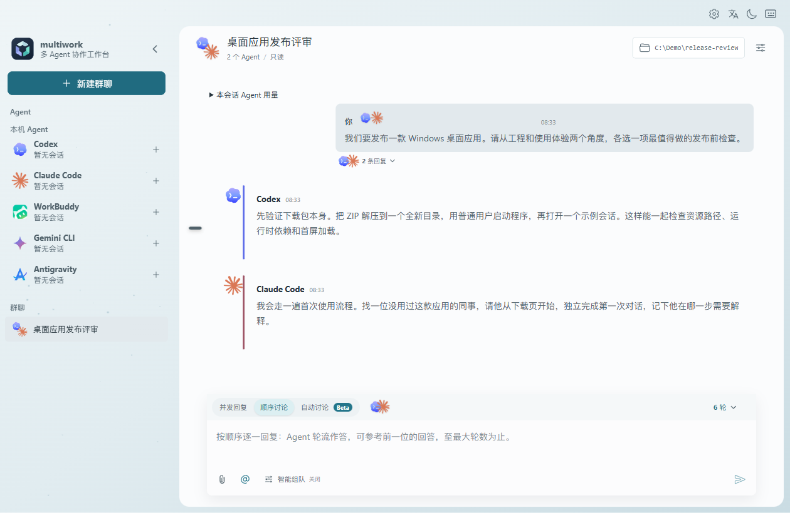

一个工作台，
多位 Agent。
把本机 CLI 和模型 API 放进同一场对话。对照各自的回复，追踪 token 用量，随时单独停止一位成员。
本地运行 · 按会话授权文件写入
Agent 用量
示例会话已报告的 token
12,840TOKENS
回复 01回复 08
输入10,240
输出2,600
桌面工作台
把任务交给小组，之后从看板回到原消息，接着讨论。
并发回复
成员收到同一份问题，谁先完成就先显示谁的回复。等待时可以单独停止较慢的成员。
顺序讨论
成员逐一发言，后一位可以参考前面已经完成的回答。
自动讨论
让成员提出方案、请求复核，在你授权的范围内继续推进任务。
● ● ●multiwork.exeWIN / x64

开启第一次对话
版本说明与 SHA-256 ↗- 打开应用完整解压 Windows x64 压缩包，打开 multiwork.exe。
- 接入 Agent先在原生 CLI 登录并刷新检测，或在 Agent 设置中配置兼容的模型 API。
- 发送共同任务选择成员和讨论模式。展开会话用量，查看各服务实际返回的统计。